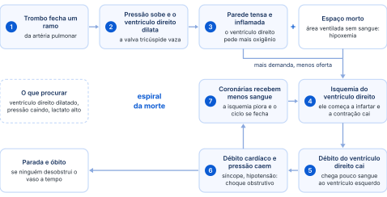
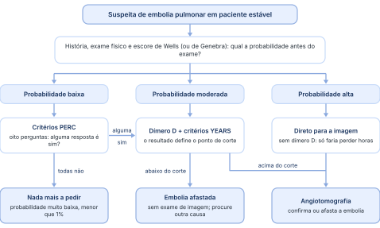
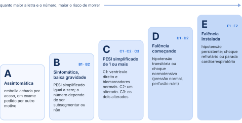

Anticoagulante
Para todos. Bloqueia a iniciação de novos trombos e mantém a carga embólica no patamar que o paciente já está aguentando.
Como suspeitar, confirmar, classificar de A a E e tratar a embolia pulmonar aguda, já pela diretriz nova, publicada em fevereiro de 2026.
Organizada a partir da transcrição da aula, com os erros da transcrição automática corrigidos e a linguagem ajustada. A legenda de cores está na página 2.
“Não foi o Vinícius que complicou, foram os editais de prova de residência que complicaram.”
A tromboembolia pulmonar é a obstrução súbita do fluxo de sangue em um ramo da artéria pulmonar. O fluxo para a região do pulmão depois do ponto obstruído diminui ou para por completo. Essa área continua recebendo ar, mas não recebe sangue: é o efeito de espaço morto, visto na fisiologia. O sangue não chega ali, não é oxigenado, e o paciente fica com hipoxemia.
Quase sempre de uma veia sistêmica. O trombo se solta, passa pelo coração direito e entala em um ramo da artéria pulmonar. Cerca de 90% vêm das veias profundas dos membros inferiores. O restante, menos de 10%, pode vir de veias abdominais, pélvicas ou dos membros superiores, sobretudo no paciente de terapia intensiva com cateteres e outros dispositivos nos braços.
Trombose venosa profunda e embolia pulmonar têm a mesma fisiopatologia e a mesma história natural. Juntas, recebem o nome de tromboembolismo venoso. Alguns autores tratam a trombose como a doença de base e a embolia como sua complicação.
Embolia sem trombose encontrada nos exames acontece, mas é incomum. Trombose sem embolia é muito comum: o diagnóstico foi precoce e não deu tempo de embolizar, ou os êmbolos foram pequenos e não deram sintomas.
Existem embolias pulmonares que não são por trombo: gordurosa, aérea, por corpo estranho e por líquido amniótico. Todas são muito mais raras. Pela estimativa do professor, perto de 98 a 99% das embolias pulmonares são causadas por trombo.
Mesmo quando se suspeita de outra causa, como líquido amniótico, não dá para garantir que aquilo não é um coágulo. Por isso toda embolia pulmonar é tratada como tromboembolia, com anticoagulação, que é a base do tratamento. A exceção é a causa não trombótica evidente: aí se evita anticoagular.
A incidência anual vem subindo, sobretudo dos anos 1990 até 2000 a 2010; depois ficou mais estável, mas segue em alta. O motivo principal é a tomografia: aparelhos cada vez mais precisos enxergam trombos pequenos, que os antigos não mostravam. Os trombos grandes, que matam, aparecem em qualquer tomógrafo.
Resultado: o número de óbitos ficou parecido, mas o número de casos diagnosticados, o denominador, cresceu, e a mortalidade caiu. Diagnosticar mais cedo, e casos mais leves, também ajuda a reduzir a mortalidade.
Principal complicação pulmonar aguda não infecciosa do paciente internado e causa importante de morte hospitalar.
Terceira doença cardiovascular mais frequente, atrás do infarto e do acidente vascular cerebral.
Em autópsias de óbitos com causa presumida, como sepse, até 30% tinham uma embolia que ninguém suspeitou.
Estudos da era anterior à heparina (um deles publicado em 2002, com dados antigos) mostram o que acontece sem anticoagulante. Hoje ele existe, mas só chega a quem tem o diagnóstico. E mesmo tratada, a doença ainda mata.
“Se vocês deixarem passar três diagnósticos de embolia na vida de vocês, um vai morrer, e a causa vai ser quem? Vocês. Então não deixem passar esse diagnóstico. Pensem sempre em embolia.”
Outro estudo encontrou mortalidade de 15% em dez meses. Em todos, a maior parte das mortes acontece nas duas primeiras semanas depois do diagnóstico.
O idoso tem mais embolia e morre mais dela.
Câncer, doença cerebrovascular.
Grande carga de trombos desde o início.
“É uma doença que mata se eu não diagnostico. Se eu diagnostico, ainda assim mata. E se eu trato bem certinho, daqui a um, dois, cinco anos, volta.”
Existem várias classificações. Quatro aparecem na aula, e a última é a que mais importa.
A aula trata só da aguda. A crônica vem de embolias agudas repetidas e não tratadas e pode levar à hipertensão pulmonar tromboembólica crônica: outra doença, com outra apresentação, conduzida pelo especialista.
Usada pelo radiologista no laudo: em sela, lobar, segmentar ou subsegmentar. Exemplo: embolia segmentar anterior do lobo inferior direito, no ramo anterior da artéria desse lobo, que se divide em cinco segmentos.
O coágulo é tão grande que cavalga a bifurcação do tronco da artéria pulmonar, onde ela se divide em direita e esquerda, e obstrui as duas. Se a obstrução for total, o paciente não resiste; se for parcial, o quadro é muito grave.
A assintomática é achado de exame: o paciente faz, por exemplo, uma angiotomografia de coronárias pedida pelo cardiologista, e o radiologista vê um trombo. Acontece, mas não é comum.
A mais importante: separa o paciente hemodinamicamente estável do instável e define o caminho do diagnóstico e do tratamento.
O paciente estável está bem perfundido: pressão normal, extremidades aquecidas, lactato normal. Os tecidos recebem sangue e não há metabolismo anaeróbico. O instável geralmente está em choque, com hipotensão.
Existe instabilidade sem hipotensão: pressão normal, mas paciente mal perfundido, com lactato alto e outros sinais de metabolismo anaeróbico. É o choque normotensivo. A diretriz antiga não tinha lugar para ele, que ficava dentro de outro grupo de risco; a classificação nova dá a ele uma categoria própria.
Duas coisas aumentam o risco de instabilidade: carga embólica grande, com muitos trombos obstruindo a circulação, e reserva cardiopulmonar baixa. Um idoso de 80 anos com insuficiência cardíaca, miocardiopatia dilatada ou cardiopatia isquêmica pode descompensar com uma quantidade de trombos que não abalaria um paciente saudável.
O próprio organismo produz fatores pró-coagulantes e anticoagulantes, em equilíbrio: o sangue precisa coagular em um ferimento, mas o corpo também precisa desfazer coágulos em excesso. Quando a balança pende para a formação de trombos, eles surgem sem que a lise natural dê conta.
Imobilidade prolongada: o sangue para nas veias.
Parede do vaso lesada, como na aterosclerose e nos múltiplos fatores de risco vascular.
Genética, como nas trombofilias, ou adquirida.
O quarto componente (seria uma “tétrade”): trauma, pós-operatório, obesidade mórbida, câncer, doença inflamatória intestinal, artrite.
O anticoagulante impede que novos trombos se formem. Quem dissolve o trombo que já existe é a lise natural do corpo, ou um trombolítico, quando o caso é grave.
Para todos. Bloqueia a iniciação de novos trombos e mantém a carga embólica no patamar que o paciente já está aguentando.
Só no quadro grave. Desfaz o trombo formado, mas aumenta muito o risco de sangramento: não se usa no paciente estável.
Além da idade, os fatores de risco se dividem em fortes, moderados e fracos. Ninguém vai lembrar de todos, mas o raciocínio fica: risco hormonal, estase venosa, problema ortopédico ou cardiovascular deve fazer pensar em embolia.
Idoso ou não: operou o joelho ou o quadril, internou por fibrilação atrial ou por insuficiência cardíaca, teve infarto recente, e começa com dispneia, hemoptise ou um quadro que lembre embolia? Pense em embolia.
A apresentação varia muito. Pode ser só dispneia (o paciente operou o joelho e começou com falta de ar) ou só taquipneia. Quanto mais sinais e sintomas compatíveis se somam, maior a probabilidade pré-teste, a chance de ser embolia antes de qualquer exame.
Dispneia, taquipneia, dor torácica, hemoptise e hipoxemia. Os sintomas de trombose venosa profunda deveriam estar em vermelho também: pode marcar no seu slide.
Um estudo comparou pacientes que chegaram à emergência com suspeita de embolia: os que confirmaram e os que não confirmaram o diagnóstico. Os sintomas foram muito parecidos, com poucas exceções.
Quando a síncope tem causa evidente, está explicada: arritmia de início recente (palpitação desde a tarde e uma fibrilação atrial aguda no eletrocardiograma), crise epiléptica, infarto com baixo débito. Mas a síncope sem causa clara, que às vezes se repete, pode ser baixo débito por choque obstrutivo.
Síncope sem causa bem explicada: a embolia pulmonar tem de entrar no diagnóstico diferencial.
O contrário também vale: quando não é embolia, pode ser muita coisa. A embolia entra no diferencial de dor torácica, dispneia, hemoptise, síncope e até ansiedade.
“Esse é um slide que eu quero muito que vocês aprendam, e não apenas olhem e deixem passar. Se aprenderem, vão entender como a gente tem que atuar nesse paciente.”
Pense em uma mangueira fechada na ponta: a pressão volta para trás. Quando o trombo fecha um ramo da artéria pulmonar, a pressão se transmite ao ventrículo direito, que dilata, e a valva tricúspide fica insuficiente. A parede tensa ativa hormônios e inflama, e o ventrículo inflamado precisa de mais oxigênio. Ao mesmo tempo, o espaço morto deixa o paciente mais hipoxêmico. Mais demanda e menos oferta: o ventrículo direito entra em isquemia, começa a infartar e perde força.
Com o ventrículo direito fraco diante de uma resistência alta, chega cada vez menos sangue ao ventrículo esquerdo, ou seja, a pré-carga cai. O débito cardíaco cai, a pressão sistêmica cai, e o paciente começa a ter síncope. Com a pressão baixa, as coronárias recebem menos sangue, a isquemia piora e o ciclo se fecha: choque obstrutivo, parada e óbito. O problema começou no pulmão e repercutiu lá na frente.
Quanto mais avançado na espiral, mais o paciente morre:
Na pandemia, ele e o Dr. Américo atenderam um paciente transferido de Ubiratã. No ultrassom à beira do leito, o ventrículo direito estava enorme, e o paciente parou uns dez minutos depois de chegar. Fizeram o trombolítico durante a massagem e, depois de 20 a 30 minutos de reanimação, o coração voltou, porque o vaso desobstruiu. O paciente morreu dois dias depois, de tão grave que era. A lição: ele já deveria ter sido trombolisado antes da transferência.

Quanto antes o tratamento começa, mais cedo o ciclo para. Se o paciente já chegou hipotenso, todo o resto já aconteceu: é preciso desobstruir o vaso o mais rápido possível. Procure:
Dilatação do ventrículo direito.
Queda da pressão arterial sistêmica.
Sinais de isquemia e má perfusão, como lactato alto.
Na parada, 30% ainda sobrevivem se, durante a reanimação, alguém reconhece o choque obstrutivo e faz o trombolítico. Quem chega em morte súbita tem mortalidade de 100%.
Há dois grupos de exames: os que enxergam o trombo e fazem o diagnóstico, e os que só levantam ou afastam a suspeita. Primeiro, os que não fazem diagnóstico.
Serve mais para afastar outros diagnósticos. O paciente chega com dispneia, taquipneia, hipoxemia e dor torácica, e pode ser pneumonia, pneumotórax, câncer ou derrame pleural volumoso, todos fáceis de ver na radiografia. Para mostrar a embolia, a sensibilidade é muito baixa.
Opacidade triangular, em cunha, com a base na pleura. É o pulmão infartado: tudo depois do ponto obstruído fica isquêmico, morre e fica mais denso.
Oligoemia periférica: some a trama vascular de um segmento. O sangue é radiopaco; se não se vê o vaso, o sangue não passa ali, e se presume uma obstrução.
Os dois juntos, no mesmo segmento, fazem pensar em embolia.
“São dois sinais que caem mais em prova do que na vida. Vocês não vão ver muitos sinais de Westermark na vida de vocês, mas na prova pode ser que cobre.”
Também ajuda a afastar outra causa, como o infarto.
O achado mais frequente, ou seja, o mais sensível, mas pouquíssimo específico: muita gente tem, e não quer dizer muita coisa.
O padrão clássico e mais específico de sobrecarga do ventrículo direito. Por ora, é para decorar o nome; reconhecer no traçado vem na cardiologia do ano que vem.
O nome resume o traçado: onda S profunda na derivação D1, onda Q e onda T invertida na derivação D3.
Exame de sangue que dosa um produto da degradação da fibrina: sobe quando algum coágulo está sendo desfeito na circulação. O problema é que também sobe em processos inflamatórios: câncer, pneumonia, politrauma, cirurgia recente, gestação e até a simples internação.
Alto valor preditivo negativo: abaixo do ponto de corte, a embolia está afastada.
Pode ser embolia ou qualquer outra causa de elevação. Só manda seguir a investigação.
Não é o valor de referência do laboratório, que muda conforme o kit (500, 250, 750). O dímero D sobe naturalmente com a idade; por isso, acima de 50 anos, o ponto de corte acompanha a idade. Um segundo critério, o YEARS, também muda o corte; ele aparece no fluxograma, na seção 10.
Para pacientes acima de 50 anos.
Agora, os exames que fazem o diagnóstico porque enxergam o trombo, ou, no caso do Doppler, a trombose que o originou.
É o exame mais adequado hoje. Está disponível em quase toda cidade de médio porte, de uns 20 a 30 mil habitantes para cima, e a pandemia ajudou a equipar os hospitais; antes, era preciso transferir o paciente para centros maiores.
Tem alto valor preditivo positivo e negativo: confirma a doença quando se suspeita dela e a afasta quando o médico não acredita nela, como no paciente com dímero D alto que provavelmente não tem embolia.
Exame de medicina nuclear: o paciente inala um radiofármaco e recebe outro na veia. Área ventilada mas não perfundida indica embolia. Hoje é rara: poucas cidades têm o aparelho, e muitos quebraram sem manutenção.
Cateterismo da artéria pulmonar com contraste. Foi o padrão-ouro por anos, mas é invasiva e usa mais contraste iodado que a tomografia. Hoje, só quando já se vai fazer a trombectomia: diagnóstico e tratamento juntos.
Em geral não vê o trombo (se o vê na saída da artéria pulmonar, fecha o diagnóstico). Ajuda de forma indireta: ventrículo direito muito dilatado em paciente grave é embolia até prova em contrário.
Não vê o trombo no pulmão, mas vê a trombose na perna. Mesma doença, mesmo tratamento: quadro compatível com Doppler positivo já autoriza anticoagular.
Doença renal crônica que não tolera o contraste iodado da tomografia, e alergia a esse contraste. Mesmo na alergia, porém, há protocolos de dessensibilização que permitem fazer a angiotomografia. A cardiologia e a neurologia usam bastante cintilografia; a pneumologia, muito pouco.
Não precisa ser ecocardiografista: quem sabe fazer ultrassom à beira do leito passa o transdutor e vê o coração direito grande. Segundo o professor, praticamente nada além da embolia dilata o ventrículo direito de forma aguda. Se o quadro é grave, o tratamento começa ali, às vezes já com trombólise.
Existem outras causas de dilatação aguda do ventrículo direito, como infarto do ventrículo direito e descompensação de hipertensão pulmonar prévia. No paciente instável com quadro compatível, porém, a embolia é a primeira hipótese.
Pode e deve ser feita, se possível, mas nem sempre é necessária. Na gestante, o Doppler vem antes: não tem risco nenhum, e, se mostrar trombose, ela já vai ser anticoagulada e dispensa a radiação e o contraste da angiotomografia (seção 14).
“Agora vai começar a ter um monte de sigla, um monte de escore. Vocês vão ter que prestar atenção, senão vão se perder.”
Primeiro passo: história e exame físico para estimar a probabilidade de embolia antes de qualquer exame, com uma escala de probabilidade pré-teste: escore de Wells, critérios PERC ou escore de Genebra. A probabilidade, baixa, moderada ou alta, define o próximo passo.
Precisa saber qual escala usar; os itens se acham em qualquer busca. São eles: sinais clínicos de trombose venosa profunda (3 pontos), embolia como diagnóstico mais provável, taquicardia, imobilização por mais de 3 dias ou cirurgia nas últimas 4 semanas, trombose ou embolia prévia, hemoptise e câncer.
Sinais de trombose, internação recente, cirurgia e hemoptise já somam 8,5 ou 9 pontos. Nesse paciente não se pede dímero D: ele vai direto para o exame de imagem, que na prática é a angiotomografia. Em cidade sem tomógrafo, a conduta é transferir, e não pedir dímero D enquanto espera.
“Vai perder três, quatro horas para fazer um dímero D, vai ver um resultado lá nas alturas, 5.000, e o que vai ter que fazer? Angiotomografia. Perdeu quatro horas da tua vida.”
PERC, do inglês, são critérios para afastar a embolia. A resposta tem de ser não para todas:
Tudo não: probabilidade muito baixa, menor que 1%, e não é preciso pedir mais nada. Qualquer sim: o paciente segue o caminho da probabilidade moderada.
No escore de Wells, embolia como diagnóstico mais provável também vale 3 pontos; frequência cardíaca acima de 100, imobilização ou cirurgia e tromboembolismo prévio valem 1,5 ponto cada; hemoptise e câncer, 1 ponto cada. Na versão de três níveis: menos de 2 pontos, baixa; 2 a 6, moderada; mais de 6, alta. Nos critérios PERC, os limites são idade de 50 anos ou mais, frequência cardíaca de 100 ou mais, saturação abaixo de 95% e cirurgia ou trauma com internação nas últimas 4 semanas.

Com probabilidade moderada, ou baixa com algum critério PERC, faça duas coisas: colete o dímero D e avalie os três critérios YEARS: sinais clínicos de trombose venosa profunda, hemoptise e embolia como diagnóstico mais provável.
Abaixo dele, embolia afastada; acima, exame de imagem.
Com algum critério YEARS presente, a exigência aumenta: o corte cai de 1.000 para 500, abaixo de 50 anos, ou para idade × 10, acima de 50 anos, para não deixar passar nenhum caso. Na prática:
Exemplo: paciente de 70 anos com hemoptise (um critério YEARS) tem corte em 700.
“Qual é o ponto de corte do dímero D para afastar embolia? A resposta que vocês vão ter que procurar nas alternativas é: depende. Não é 500, não é 1.000, não é 750.”
Paciente chocado, hipotenso, mal perfundido, quase parando: em geral não dá tempo de angiotomografia. Faça ecocardiograma à beira do leito.
“Se você não sabe fazer um eco à beira do leito, não faz plantão de emergência. Se o paciente chegar chocado, você tem que passar o eco e ver o ventrículo direito.”
Todo paciente com embolia recebe anticoagulante, por via parenteral ou oral. O oral entra na hora da alta: caso leve, com alta direto da emergência, já sai com anticoagulante oral; quem interna fica na heparina parenteral até estabilizar e terminar a investigação, e começa o oral ao ir para casa.
Parenteral ou oral, o risco do anticoagulante é o mesmo: sangramento. Se o remédio afina o sangue, o paciente pode sangrar.
A preferência é pelos anticoagulantes orais de ação direta, os chamados novos anticoagulantes: rivaroxabana, apixabana, edoxabana e dabigatrana.
Começam sozinhas, sem heparina antes, a chamada ponte de heparina. O paciente pode ir para casa mais cedo.
Segundo o professor, no início do tratamento podem ter efeito pró-trombótico; por isso o paciente fica na heparina até o alvo. Isso alonga a internação.
O motivo formal da heparina antes da edoxabana e da dabigatrana é que os estudos que aprovaram esses remédios no tromboembolismo venoso usaram pelo menos 5 dias de heparina parenteral antes do comprimido.
Entre as duas preferidas, um estudo publicado no New England Journal of Medicine neste ano, em abril ou maio, mostrou que a apixabana sangra menos que a rivaroxabana. A diretriz ainda cita as duas.
“Se tiver uma questão de prova dizendo: qual o melhor anticoagulante de todos? A apixabana.”
Os antagonistas da vitamina K, principalmente a varfarina, podem ser usados, mas hoje não são incentivados. Ficam para quem não pode usar os de ação direta: lactantes e portadores de prótese valvar mecânica, em que a varfarina é melhor. O professor comentou que um estudo deste ano talvez tenha liberado os de ação direta na válvula mecânica, mas não o leu; por isso, fique com a informação antiga.
Até a informação mais recente disponível, nas próteses valvares mecânicas os anticoagulantes de ação direta continuam contraindicados: estudos com dabigatrana e com apixabana foram interrompidos por excesso de eventos.
O anticoagulante só impede novos trombos. Para desfazer depressa os que já se formaram, é preciso uma terapia de reperfusão.
Remédio que faz a lise do trombo: estreptoquinase, alteplase ou tenecteplase; a mais usada é a alteplase, a mais disponível. Sangra mais que o anticoagulante, e o paciente recebe os dois: vigie por pelo menos 24 horas, com medo maior de hemorragia no sistema nervoso central.
O hemodinamicista leva um cateter até o trombo, e um rotor o quebra e aspira ao mesmo tempo. Sangra menos que o trombolítico, mas leva horas para preparar. É para quem tende a chocar e ainda não chocou; na parada, não dá tempo.
O trombolítico é injetado direto no trombo, pela artéria, com dose bem menor que a da trombólise sistêmica.
Abrir o tórax e a artéria pulmonar e retirar o coágulo à mão. Tratamento heroico, de chance mínima: quando não há hemodinâmica nem trombolítico, só um cirurgião muito corajoso.
“Não tenham medo de usar quando estiver indicado. Se ele fizer um acidente vascular cerebral hemorrágico, vocês estão amparados: usaram a estratégia correta, e ele teve uma consequência negativa de uma terapia que estava indicada.”
Uma “cestinha” na veia cava inferior (perto do cirurgião vascular, chame de filtro). Ela não dissolve os trombos que já estão no pulmão; só impede que trombos novos das pernas subam. Como isso o anticoagulante já faz, o filtro fica para duas situações:
Contraindicação absoluta: politrauma grave (traumatismo cranioencefálico, trauma de tórax e abdome, ruptura de baço), cirurgia oftalmológica ou neurocirurgia recentes, acidente vascular cerebral hemorrágico recente.
O paciente está anticoagulado, os trombos não deveriam chegar ao pulmão, e chegaram: o filtro barra os próximos.
Quanto mais tempo fica, maior a chance de o próprio filtro, um corpo estranho, causar trombos. Fica 30 ou 60 dias, conforme o caso, até o paciente poder ser anticoagulado; depois é retirado.
Antes de escolher o tratamento, classifique o paciente. A diretriz nova propõe as categorias A a E. É difícil de olhar e saber onde o paciente está, mas a lógica é simples: quanto maior a letra, maior o risco de morrer; dentro da mesma letra, quanto maior o número, maior o risco.

Na diretriz, B1 é a embolia subsegmentar e B2 a não subsegmentar. D1 é a hipotensão transitória (pressão sistólica abaixo de 90 mmHg ou queda de mais de 40 mmHg, por menos de 15 minutos ou que responde a volume), e D2 é o choque normotensivo.
“Na prova, se eu for perguntar, vai ser simples: o PESI simplificado dele é três e ele não está mal perfundido. Qual a categoria? C. Se for uma banca de residência, aí pode vir qualquer coisa.”
O PESI, do inglês índice de gravidade da embolia pulmonar, existe em duas versões. A completa soma pontos a partir da idade (70 anos começam com 70; ser homem soma 10; insuficiência cardíaca, mais 10; doença pulmonar obstrutiva crônica, mais 10, e assim por diante) e classifica o paciente de I a V. A simplificada é mais fácil: cada item vale zero, se ausente, ou um, se presente. Zero: baixa gravidade (B). Um ou mais: mortalidade mais alta (C em diante).
Itens do PESI simplificado, um ponto cada: idade acima de 80 anos; câncer; doença cardiopulmonar crônica (insuficiência cardíaca ou doença pulmonar crônica); frequência cardíaca de 110 ou mais; pressão sistólica abaixo de 100 mmHg; saturação de oxigênio abaixo de 90%.
A disfunção do ventrículo direito é o ponto-chave: é o sinal de que o paciente pode entrar na espiral da morte. Ventrículo direito dilatado ou hipocinético morre bem mais. Para avaliar, use o ecocardiograma ou a própria angiotomografia do diagnóstico: o radiologista costuma descrever o ventrículo direito como normal, aumentado ou muito aumentado, com desvio do septo para a esquerda.
Marcador de lesão do miocárdio: sobe quando o ventrículo direito está infartando.
Ele e sua fração N-terminal sobem com a distensão do ventrículo.
Pressão normal, mas pelo menos um sinal de má perfusão (os critérios estão no slide):
Quanto mais grave o paciente, maior a chance de indicar reperfusão; quanto mais leve, só anticoagulação.
Para todos os pacientes com embolia.
A rivaroxabana começa com 30 mg por dia e depois cai para 20 mg.
Na insuficiência renal, a dose é reduzida; o professor citou a apixabana em 2,5 mg de 12 em 12 horas.
Na bula e nas diretrizes, a apixabana começa com 10 mg duas vezes ao dia nos 7 primeiros dias e só depois passa a 5 mg duas vezes ao dia. No tromboembolismo venoso, a bula não prevê redução da apixabana apenas pela função renal; os critérios de 2,5 mg de 12 em 12 horas (idade, peso e creatinina) vêm da fibrilação atrial. Vale conferir no slide.
Depois dos 3 a 6 meses, decide-se se o paciente para ou continua. Quem continua, às vezes por tempo indefinido, recebe metade da dose:
Metade da dose de manutenção.
Fica no tratamento estendido quem tem alto risco de recorrência; lembre que ela chega a 30% em 10 anos. O risco é maior no primeiro ano e cai bastante depois, sobretudo quando o paciente volta a se mobilizar.
“Se o cara tem uma condição que você não vai conseguir suspender, você mantém. Se ele fizer outra embolia, talvez entre na espiral da morte e morra.”
Câncer metastático ou que não se cura (leucemia mieloide crônica), imobilidade crônica (trauma raquimedular), doença autoimune grave em imunossupressão, como artrite reumatoide e lúpus.
Puerpério, internação de menos de 72 horas, cirurgia pouco extensa, fertilização in vitro que vai acabar. Costuma-se estender para 9 a 12 meses e então suspender.
O paciente que ficou imobilizado pela prótese de quadril, operou, melhorou e já anda e faz fisioterapia: a embolia veio daquele fator, que foi corrigido. Completa os 3 a 6 meses e suspende.
Investigue quando o Wells é alto, ou intermediário ou baixo com dímero D positivo. Na gravidez ele vem positivo quase sempre, mas vale pedir: negativo afasta.
Nada de anticoagulante oral na gestação. Enoxaparina subcutânea, duas vezes ao dia, aplicada em casa.
A heparina não fracionada exigiria seis meses de internação com heparina na veia: inviável. Na prática, a enoxaparina segue até o parto e as primeiras semanas do puerpério, de alto risco de recorrência, mesmo passando dos seis meses. Parar antes do parto, com seis meses completos, é raro: a embolia costuma surgir depois do terceiro mês, quando o útero grande comprime a veia cava e piora a estase.
A varfarina passa a ser opção, inclusive na lactação. Os de ação direta, não: nem na gestação, nem na lactação.